library(logspline) # needed for `bayestestR::si()`library(bayestestR) # for visualization of posterior distribution and its derivativeslibrary(tidyverse)
── Attaching core tidyverse packages ──────────────────────── tidyverse 2.0.0 ──
✔ dplyr 1.1.3 ✔ readr 2.1.4
✔ forcats 1.0.0 ✔ stringr 1.5.1
✔ ggplot2 3.5.0 ✔ tibble 3.2.1
✔ lubridate 1.9.3 ✔ tidyr 1.3.0
✔ purrr 1.0.2
── Conflicts ────────────────────────────────────────── tidyverse_conflicts() ──
✖ dplyr::filter() masks stats::filter()
✖ dplyr::lag() masks stats::lag()
ℹ Use the conflicted package (<http://conflicted.r-lib.org/>) to force all conflicts to become errors
posterior_beta <-function(alpha, beta, n, k, ndraws =10000) {return(distribution_beta(10000, alpha+k, beta+n-k))}
Bayesian inference: planarian growth/shrinking example
Likelihood
# True population valuestrue_mean =2true_sd =3# Imagine we measure n planariansn =50sample =rnorm(n, true_mean, true_sd)sample_mean =mean(sample)cat("Sample mean =", round(sample_mean,2), "mm")
Sample mean = 2.38 mm
mu =seq(-10,10,.1)scaling =1/(n+1) # this allows the likelihood to behave like a pdf, i.e. integrate to 1# Calculate the *likelihood function* of the data for all possible values of µpdf <-vector("numeric", length(mu)); i =1for (m in mu) { pdf[i] =prod(dnorm(sample, mean = m, sd = true_sd)); i = i +1}df.likelihood =data.frame(mu = mu,likelihood = pdf/(sum(pdf)*(mu[2]-mu[1])))# Let's visualize the likelihoodggplot(df.likelihood, aes(y = likelihood, x = mu)) +geom_vline(xintercept =0, linetype =2, color ="grey50") +geom_line(color ="red") +scale_x_continuous(breaks = scales::pretty_breaks(10)) +labs(x ="Population growth in space, in mm (µ)", y ="p(x|µ)", title ="Likelihood (of the observed data)")
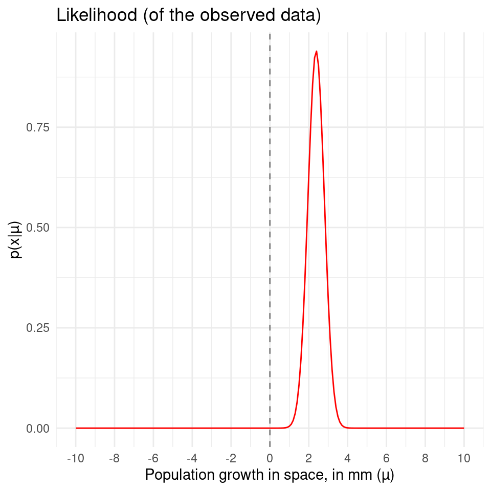
Normal prior
mu =seq(-10,10,.1)df.prior =data.frame(mu =rep(mu,3),prior =c(dnorm(mu,0,10000), dnorm(mu,0,5), dnorm(mu,0,1)),scenario =c(rep("A",length(mu)), rep("B",length(mu)), rep("C",length(mu))))scenario.labels =c("A"="(A) the frequentist approach", "B"="(B) physical constraint", "C"="(C) biological constraint")ggplot(df.prior, aes(y = prior, x = mu)) +facet_wrap(~ scenario, labeller =labeller(scenario = scenario.labels)) +geom_vline(xintercept =0, linetype =2, color ="grey50") +geom_line(color ="deepskyblue") +scale_x_continuous(breaks = scales::pretty_breaks(10)) +labs(x ="Population growth in space, in mm (µ)", y ="p(µ)", title ="Prior belief p(µ)")
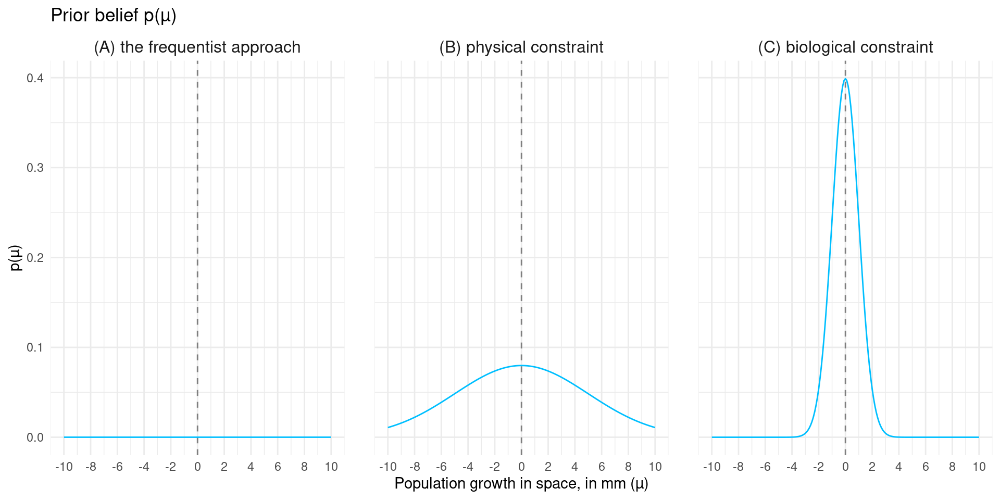
Posterior
# Finally, we can combine the likelihood and prior under each of the 3 scenarios and obtain # the corresponding posterior beliefsposterior_mean <-function(prior_sd) {return(posterior_sd(prior_sd)*(n/(true_sd^2)*sample_mean))}posterior_sd <-function(prior_sd) {return(1/(1/prior_sd^2+ n/(true_sd^2)))}# Calculate the posteriormu =seq(-10,10,.1)df.posterior =data.frame(mu =rep(mu,3),posterior =c(dnorm(mu, posterior_mean(10000), posterior_sd(1000)),dnorm(mu, posterior_mean(5), posterior_sd(5)),dnorm(mu, posterior_mean(1), posterior_sd(1))),scenario =c(rep("A",length(mu)), rep("B",length(mu)), rep("C",length(mu))))# Join all distributions in a signle dataframe for conveniencedf.all <- df.prior %>%full_join(df.posterior) %>%full_join(df.likelihood) %>%gather(key = distribution, value = pdf, prior,likelihood,posterior) #%>%
Joining with `by = join_by(mu, scenario)`
Joining with `by = join_by(mu)`
# mutate(distribution = factor(distribution, levels = c("likelihood","prior","posterior")))# Plotggplot(df.all, aes(x = mu, y = pdf, color = distribution)) +facet_wrap(~ scenario, labeller =labeller(scenario = scenario.labels)) +geom_vline(xintercept =0, linetype =2, color ="grey50") +geom_line() +scale_x_continuous(breaks = scales::pretty_breaks(10)) +labs(x ="Population growth in space, in mm (µ)", y ="PDF") +theme(legend.position ="bottom")
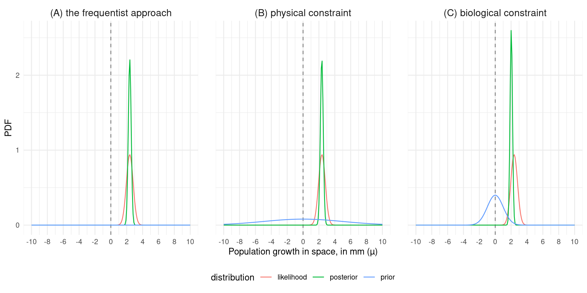
Bayesian inference: coin toss example
Likelihood
# Now imagine we toss the coin 50 times and get 38 headsn =50k =40x =seq(0,1,.01)scaling =1/(n+1) # this allows the likelihood to behave like a pdf, i.e. integrate to 1# Let's visualize the *likelihood function* of the data for all possible values of qdf.likelihood =data.frame(x = x,likelihood =dbinom(k, n, x)/scaling)options(repr.plot.width =3, repr.plot.height =3)ggplot(df.likelihood, aes(y = likelihood, x = x)) +geom_vline(xintercept = .5, linetype =2, color ="grey50") +geom_line(color ="red") +scale_x_continuous(breaks =seq(0,1,0.1)) +labs(x ="Probability of 'heads' (q)", y ="p(k|q)", title ="Likelihood (of the observed data)")
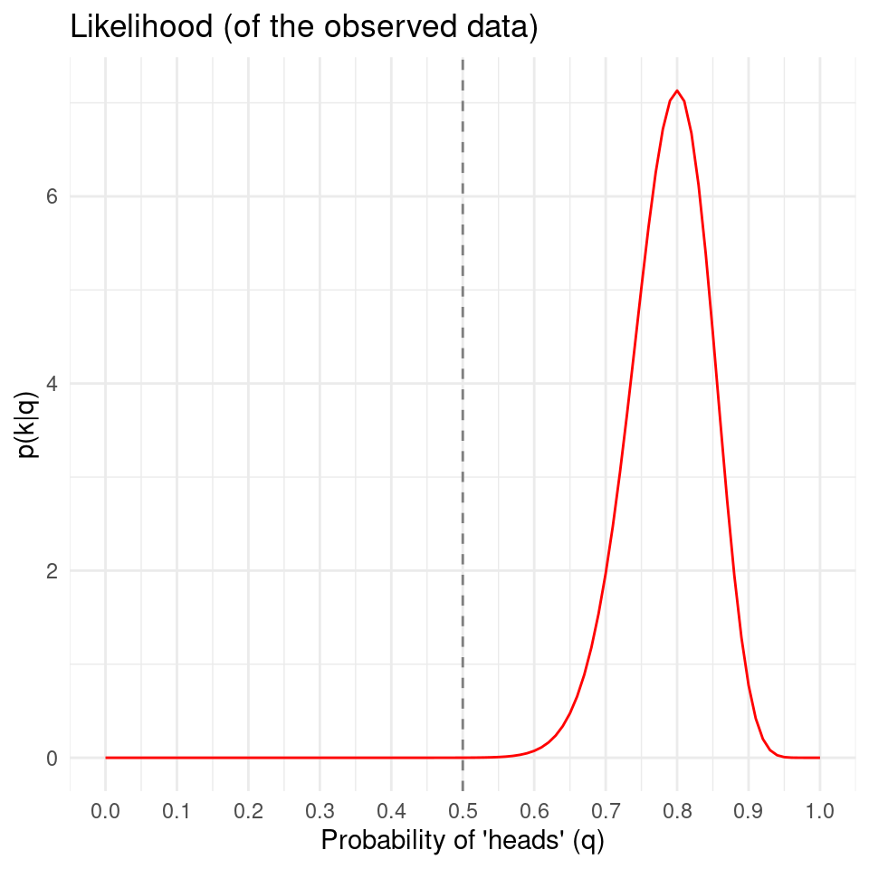
Beta prior
# Imagine you have a coin and want to assess how (un)fair it is.# Even before you test it, you hold some (implicit) belief about it. Imagine 3 different scenarios:# (A) You found the coin in your pocket, it's a regular one, you have a strong expectation that it's fair.# (B) It's an ancient coin made bulkier on the heads side. Therefore you expect it might be slightly biased towards tails# (C) You have been handed the coin by a magician to check it's normal. It does look normal, but you suspect it's a rigged one, heavily biased towards one side or the other, only you don't know which one.# Let's represent your prior belief as a Beta distribution over q, the probability of the coin landing heads,# under the 2 different scenariosx =seq(0,1,.01)df.prior =data.frame(x =rep(x,3),prior =c(dbeta(x,20,20), dbeta(x,20,6), dbeta(x,0.5,0.5)),scenario =c(rep("A",length(x)),rep("B",length(x)),rep("C",length(x))))scenario.labels =c("A"="(A) regular coin", "B"="(B) ancient coin", "C"="(C) magician coin")ggplot(df.prior, aes(y = prior, x = x)) +facet_wrap(~ scenario, labeller =labeller(scenario = scenario.labels)) +geom_vline(xintercept = .5, linetype =2, color ="grey50") +geom_line(color ="deepskyblue") +scale_x_continuous(breaks =seq(0,1,0.2)) +labs(x ="Probability of 'heads' (q)", y ="p(q)", title ="Prior belief p(q)")
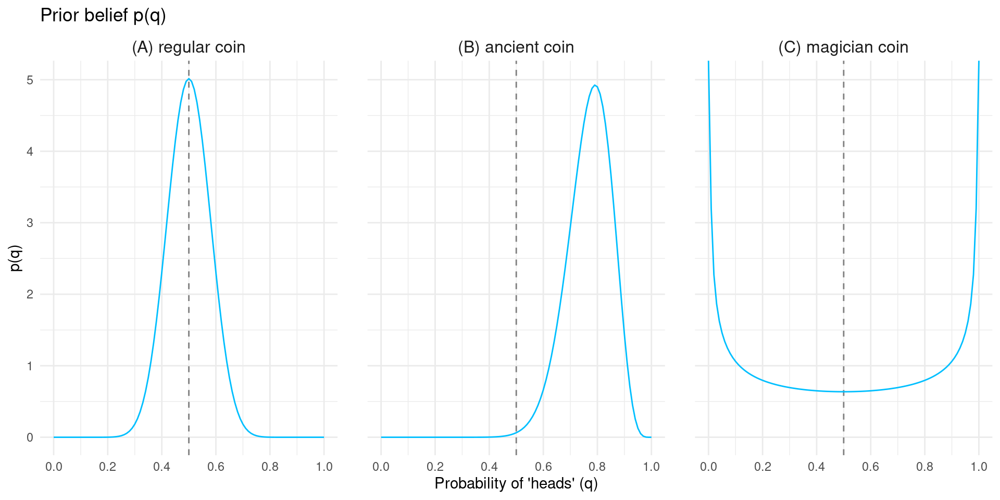
Posterior
# Finally, we can combine the likelihood and prior under each of the 3 scenarios and obtain # the corresponding posterior beliefs# Calculate the posteriordf.posterior =data.frame(x =rep(x,3),posterior =c(dbeta(x,20+k,20+n-k), dbeta(x,20+k,6+n-k), dbeta(x,0.5+k,0.5+n-k)),scenario =c(rep("A",length(x)),rep("B",length(x)),rep("C",length(x))))# Join all distributions in a signle dataframe for conveniencedf.all <- df.prior %>%full_join(df.posterior) %>%full_join(df.likelihood) %>%gather(key = distrib, value = pdf, prior,likelihood,posterior)
Joining with `by = join_by(x, scenario)`
Joining with `by = join_by(x)`
# Plotggplot(df.all, aes(x = x, y = pdf, color = distrib)) +facet_wrap(~ scenario, labeller =labeller(scenario = scenario.labels)) +geom_vline(xintercept = .5, linetype =2, color ="grey50") +geom_line() +scale_x_continuous(breaks =seq(0,1,0.2)) +labs(x ="Probability of 'heads'", y ="PDF") +theme(legend.position ="bottom")
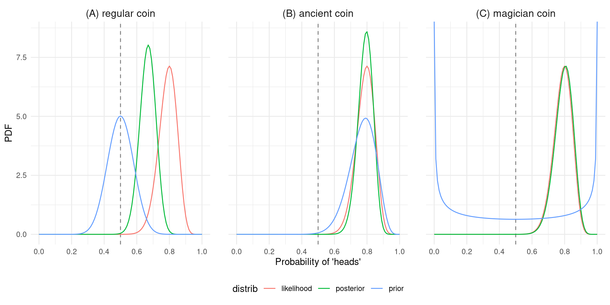
Point estimates
n =5k =4# Scenario A (regular coin)point_estimate(distribution_beta(100, 20+k,20+n-k)) %T>%print() %>%plot()
Point Estimate
Median | Mean | MAP
--------------------
0.53 | 0.53 | 0.53
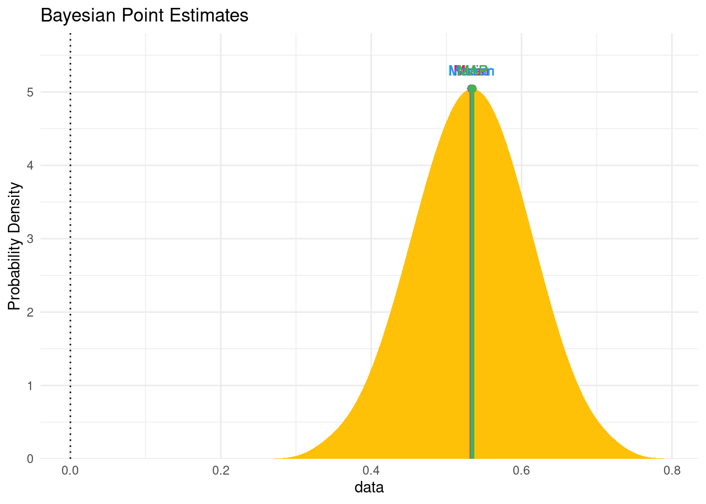
n =5k =4# Scenario B (ancient coin)point_estimate(distribution_beta(100, 20+k,6+n-k)) %T>%print() %>%plot() +scale_x_continuous(breaks =seq(0,1,0.1))
Point Estimate
Median | Mean | MAP
--------------------
0.78 | 0.77 | 0.79
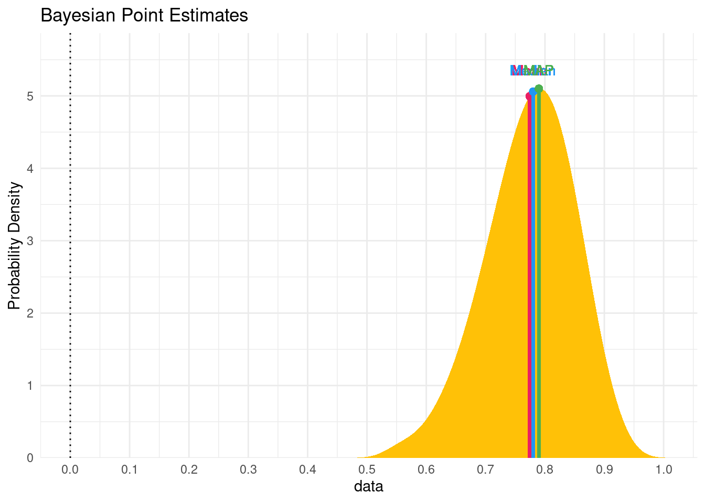
n =5k =4# Scenario C (magician coin)point_estimate(distribution_beta(10000, 0.5+k,0.5+n-k)) %T>%print() %>%plot() +scale_x_continuous(breaks =seq(0,1,0.1))
Point Estimate
Median | Mean | MAP
--------------------
0.78 | 0.75 | 0.87
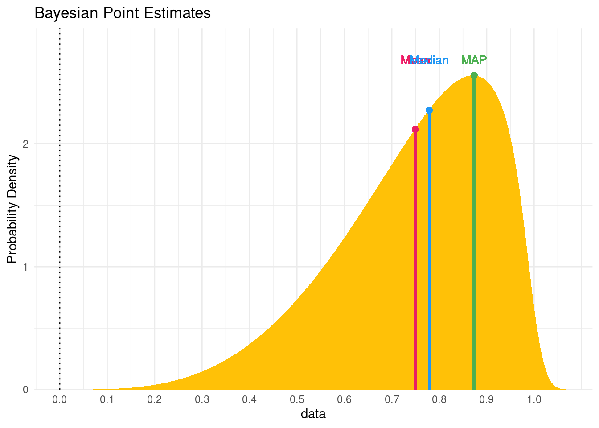
Credible intervals
See https://easystats.github.io/bayestestR/articles/credible_interval.html
n =5k =4# Scenario C (magician coin)posterior =distribution_beta(10000, 0.5+k, 0.5+n-k)ci =hdi(posterior, ci =c(0.90,0.95)) ci
Warning: Could not estimate a good default ROPE range. Using 'c(-0.1, 0.1)'.
Summary of Posterior Distribution
Parameter | Median | 95% CI | pd | ROPE | % in ROPE
--------------------------------------------------------------------
Posterior | 0.81 | [0.65, 0.92] | 100% | [-0.10, 0.10] | 0%
Bayesian hypothesis testing
Based on the posterior
Exact hypothesis
## Scenario A (regular coin)# Posteriorposterior =posterior_beta(alpha =20, beta =20, n =5, k =4)plot(hdi(posterior)) +geom_vline(xintercept =0.5, linetype =2) +expand_limits(x =c(0,1))
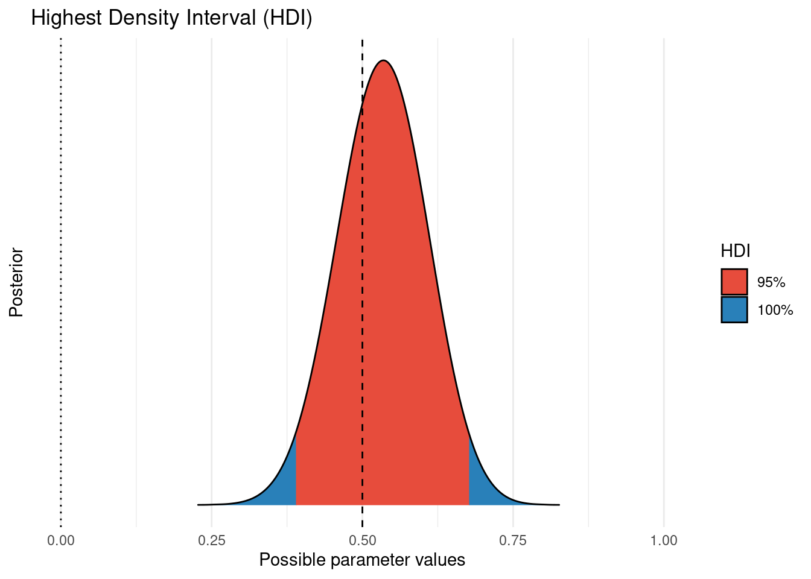
# Point nullp_pointnull(posterior, null =0.5)
MAP-based p-value
Parameter | p (MAP)
-------------------
Posterior | 0.903
# Scenario B (ancient coin)posterior =posterior_beta(alpha =20, beta =6, n =5, k =4)plot(hdi(posterior)) +geom_vline(xintercept =0.5, linetype =2) +expand_limits(x =c(0,1))
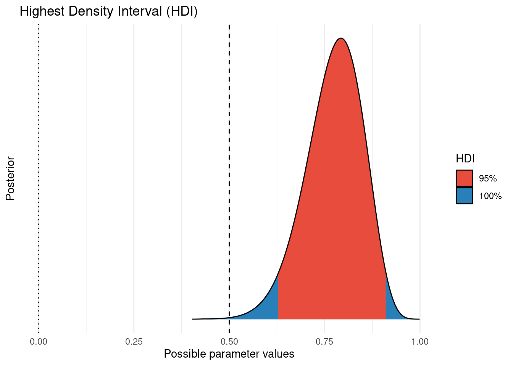
p_map(posterior, null =0.5) # p_map() is an alias for p_pointnull()
MAP-based p-value
Parameter | p (MAP)
-------------------
Posterior | 0.005
# Scenario C (magician's coin)posterior =posterior_beta(alpha =0.5, beta =0.5, n =5, k =4)plot(hdi(posterior)) +geom_vline(xintercept =0.5, linetype =2) +expand_limits(x =c(0,1))
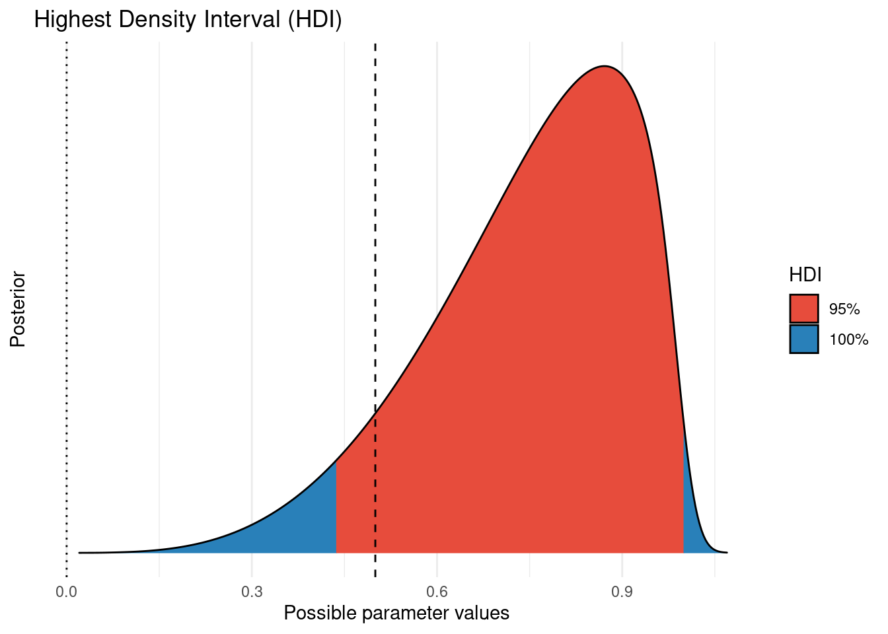
p_map(posterior, null =0.5) # p_map() is an alias for p_pointnull()
MAP-based p-value
Parameter | p (MAP)
-------------------
Posterior | 0.284
Range hypothesis
Direction of effect
Empirically, this is highly correlated to the frequentist p-value (see https://easystats.github.io/bayestestR/articles/probability_of_direction.html)
# Scenario A (regular coin)posterior <-posterior_beta(alpha =20, beta =20, n =50, k =40)p_direction(posterior-0.5, null=0)
Probability of Direction
Parameter | pd
------------------
Posterior | 99.93%
Regions of practical equivalence (ROPE)
See https://easystats.github.io/bayestestR/articles/region_of_practical_equivalence.html
“The null hypothesis is rejected or accepted if the percentage of the posterior within the ROPE is smaller than 2.5% or greater than 97.5% (…) Else, it’s unclear whether the null hypothesis should be accepted or rejected.”
posterior <-posterior_beta(alpha =20, beta =20, n =5, k =4)rope(posterior, range =c(.45,.55), ci=1) %T>%print() %>%plot() +expand_limits(x=c(0,1))
# Proportion of samples inside the ROPE [0.45, 0.55]:
inside ROPE
-----------
45.44 %
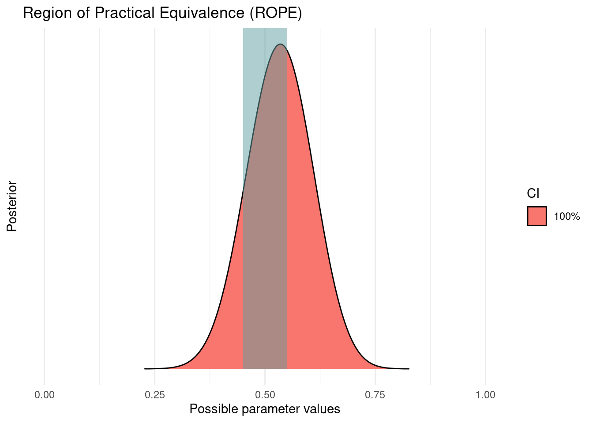
# The ROPE is included in or overlapping with the CI => we can't conclude
posterior =posterior_beta(alpha =20, beta =20, n =50, k =40)rope(posterior, range =c(.45,.55), ci =c(1,.95)) %T>%print() %>%plot() +expand_limits(x=c(0,1))
# Proportions of samples inside the ROPE [0.45, 0.55]:
ROPE for the 100% HDI:
inside ROPE
-----------
1.16 %
ROPE for the 95% HDI:
inside ROPE
-----------
0.00 %
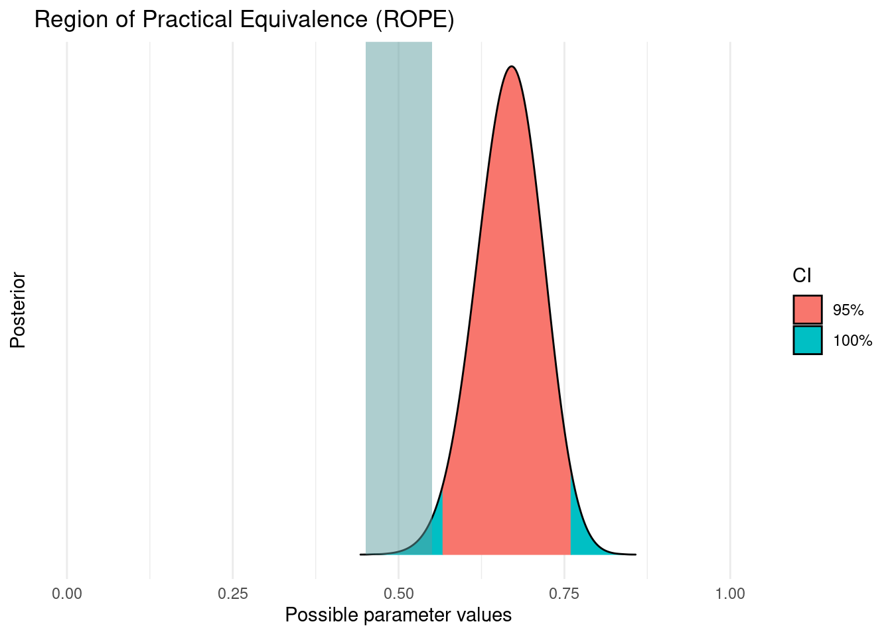
# Very little "belief" is included in the ROPE, so we can REJECT the null hypothesis for all practical purposes
posterior =posterior_beta(alpha =20, beta =20, n =500, k =250)rope(posterior, range =c(.45,.55), ci=1) %T>%print() %>%plot() +expand_limits(x=c(0,1))
# Proportion of samples inside the ROPE [0.45, 0.55]:
inside ROPE
-----------
98.02 %
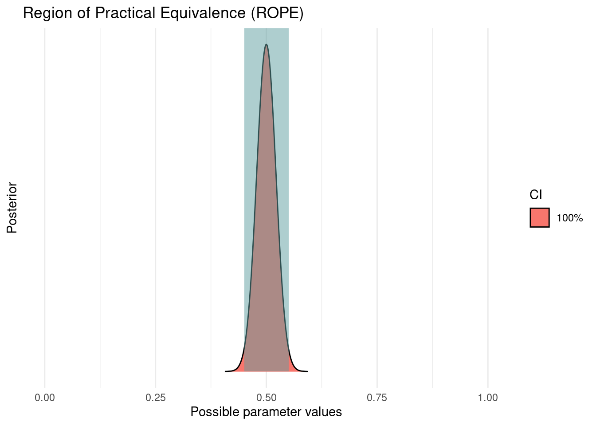
# So much "belief" is included in the ROPE that we can ACCEPT the null hypothesis for all practical purposes
Two-sample location test (with BayesianFirstAid)
library(BayesianFirstAid)
Loading required package: rjags
Loading required package: coda
Linked to JAGS 4.3.2
Loaded modules: basemod,bugs
groupA <-rnorm(30, mean =15, sd =2)groupB <-rnorm(30, mean =15.8, sd =2)# => absolute difference = 0.8, cohen's d= 0.4t.test(groupA, groupB)
Welch Two Sample t-test
data: groupA and groupB
t = -0.62542, df = 56.456, p-value = 0.5342
alternative hypothesis: true difference in means is not equal to 0
95 percent confidence interval:
-1.4508278 0.7603661
sample estimates:
mean of x mean of y
14.83418 15.17941
Bayesian estimation supersedes the t test (BEST) - two sample
data: groupA (n = 30) and groupB (n = 30)
Estimates [95% credible interval]
mean of groupA: 15 [14, 16]
mean of groupB: 15 [14, 16]
difference of the means: -0.34 [-1.5, 0.80]
sd of groupA: 1.9 [1.4, 2.6]
sd of groupB: 2.3 [1.7, 3.1]
The difference of the means is greater than 0 by a probability of 0.277
and less than 0 by a probability of 0.723
summary(m.bayes.t)
Data
groupA, n = 30
groupB, n = 30
Model parameters and generated quantities
mu_x: the mean of groupA
sigma_x: the scale of groupA , a consistent
estimate of SD when nu is large.
mu_y: the mean of groupB
sigma_y: the scale of groupB
mu_diff: the difference in means (mu_x - mu_y)
sigma_diff: the difference in scale (sigma_x - sigma_y)
nu: the degrees-of-freedom for the t distribution
fitted to groupA and groupB
eff_size: the effect size calculated as
(mu_x - mu_y) / sqrt((sigma_x^2 + sigma_y^2) / 2)
x_pred: predicted distribution for a new datapoint
generated as groupA
y_pred: predicted distribution for a new datapoint
generated as groupB
Measures
mean sd HDIlo HDIup %<comp %>comp
mu_x 14.807 0.382 14.043 15.554 0.000 1.000
sigma_x 1.980 0.294 1.442 2.564 0.000 1.000
mu_y 15.148 0.447 14.278 16.037 0.000 1.000
sigma_y 2.355 0.345 1.735 3.061 0.000 1.000
mu_diff -0.342 0.588 -1.503 0.797 0.723 0.277
sigma_diff -0.375 0.447 -1.273 0.495 0.807 0.193
nu 40.492 30.857 3.204 101.362 0.000 1.000
eff_size -0.158 0.269 -0.693 0.360 0.723 0.277
x_pred 14.794 2.139 10.572 19.028 0.000 1.000
y_pred 15.150 2.515 10.173 20.203 0.000 1.000
'HDIlo' and 'HDIup' are the limits of a 95% HDI credible interval.
'%<comp' and '%>comp' are the probabilities of the respective parameter being
smaller or larger than 0.
Quantiles
q2.5% q25% median q75% q97.5%
mu_x 14.055 14.552 14.805 15.054 15.569
sigma_x 1.488 1.771 1.950 2.160 2.638
mu_y 14.268 14.853 15.148 15.441 16.030
sigma_y 1.780 2.116 2.320 2.556 3.135
mu_diff -1.493 -0.734 -0.345 0.048 0.812
sigma_diff -1.290 -0.658 -0.365 -0.079 0.481
nu 6.759 18.500 31.892 53.478 121.067
eff_size -0.689 -0.339 -0.159 0.022 0.365
x_pred 10.530 13.429 14.805 16.153 18.997
y_pred 10.101 13.546 15.161 16.743 20.142
Bayesian First Aid Pearson's Correlation Coefficient Test
data: x and y (n = 50)
Estimated correlation:
0.41
95% credible interval:
0.16 0.64
The correlation is more than 0 by a probability of 0.998
and less than 0 by a probability of 0.002
Compare with the frequentist correlation:
cor.test(x,y)
Pearson's product-moment correlation
data: x and y
t = 3.2892, df = 48, p-value = 0.001886
alternative hypothesis: true correlation is not equal to 0
95 percent confidence interval:
0.1709381 0.6318041
sample estimates:
cor
0.4288796
We can inspect the results in detail:
summary(bct)
Data
x and y, n = 50
Model parameters
rho: the correlation between x and y
mu[1]: the mean of x
sigma[1]: the scale of x , a consistent
estimate of SD when nu is large.
mu[2]: the mean of y
sigma[2]: the scale of y
nu: the degrees-of-freedom for the bivariate t distribution
xy_pred[1]: the posterior predictive distribution of x
xy_pred[2]: the posterior predictive distribution of y
Measures
mean sd HDIlo HDIup %<comp %>comp
rho 0.400 0.123 0.161 0.637 0.002 0.998
mu[1] -0.099 0.139 -0.375 0.171 0.766 0.234
mu[2] 3.647 0.328 2.999 4.300 0.000 1.000
sigma[1] 0.940 0.106 0.745 1.152 0.000 1.000
sigma[2] 2.230 0.249 1.759 2.710 0.000 1.000
nu 43.086 32.072 3.524 107.202 0.000 1.000
xy_pred[1] -0.092 0.987 -2.071 1.818 0.537 0.463
xy_pred[2] 3.652 2.345 -0.948 8.399 0.058 0.942
'HDIlo' and 'HDIup' are the limits of a 95% HDI credible interval.
'%<comp' and '%>comp' are the probabilities of the respective parameter being
smaller or larger than 0.
Quantiles
q2.5% q25% median q75% q97.5%
rho 0.139 0.322 0.408 0.488 0.620
mu[1] -0.372 -0.193 -0.098 -0.006 0.176
mu[2] 2.983 3.432 3.653 3.866 4.288
sigma[1] 0.756 0.864 0.933 1.006 1.168
sigma[2] 1.803 2.055 2.211 2.382 2.776
nu 7.927 20.458 34.471 55.705 128.655
xy_pred[1] -2.061 -0.738 -0.091 0.556 1.832
xy_pred[2] -1.015 2.144 3.652 5.169 8.342
Warning: Support intervals might not be precise.
For precise support intervals, sampling at least 40,000 posterior
samples is recommended.
BF = 3 SI: [0.49, 0.51]
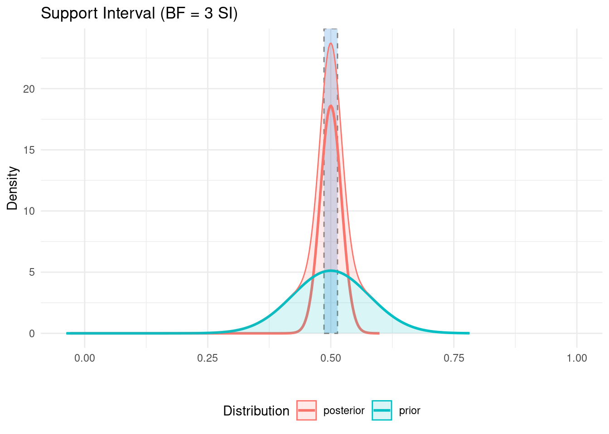
Two-sample location test (BayesFactor)
library(BayesFactor)
Loading required package: Matrix
Attaching package: 'Matrix'
The following objects are masked from 'package:tidyr':
expand, pack, unpack
************
Welcome to BayesFactor 0.9.12-4.6. If you have questions, please contact Richard Morey (richarddmorey@gmail.com).
Type BFManual() to open the manual.
************
Summary of Posterior Distribution
Parameter | Median | 95% CI | pd | ROPE | % in ROPE | BF | Prior
----------------------------------------------------------------------------------------------------
Difference | 1.25 | [0.22, 2.18] | 98.98% | [-0.10, 0.10] | 0% | 10.56 | Cauchy (0 +- 0.71)
Informative priors
Let’s set a high variance normal prior:
linewidth <-1ggplot(data.frame(), aes()) +stat_function(fun = dnorm, args =list(sd =10), color ="darkturquoise", size = linewidth) +expand_limits(x =c(-10,10)) +scale_x_continuous(breaks =seq(-10,10,1)) +labs(x ="Group difference (s)", y ="Prior distribution", title ="High variance normal prior") +theme(axis.text.y =element_blank())
Warning: Using `size` aesthetic for lines was deprecated in ggplot2 3.4.0.
ℹ Please use `linewidth` instead.
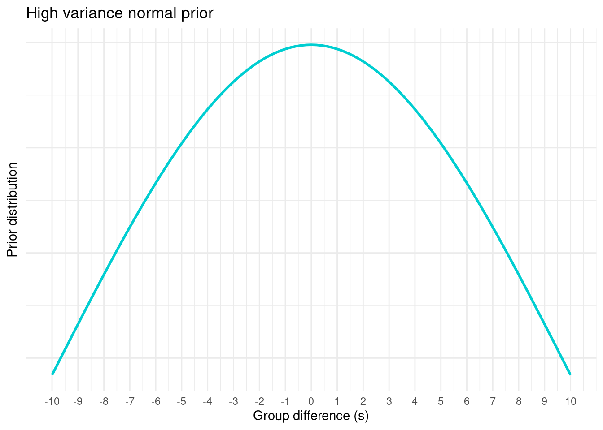
Compared to a much smaller variance prior, the high variance one appears flat, and therefore non-informative:
ggplot(data.frame(), aes()) +stat_function(fun = dnorm, args =list(sd =300), color ="gold3", size = linewidth) +stat_function(fun = dnorm, args =list(sd =10000), color ="darkturquoise", size = linewidth) +expand_limits(x =c(-1000,1000)) +scale_x_continuous(breaks =seq(-1000,1000,200)) +labs(x ="Group difference (ms)", y ="Prior distribution", title ="High vs. low variance normal priors") +theme(axis.text.y =element_blank())
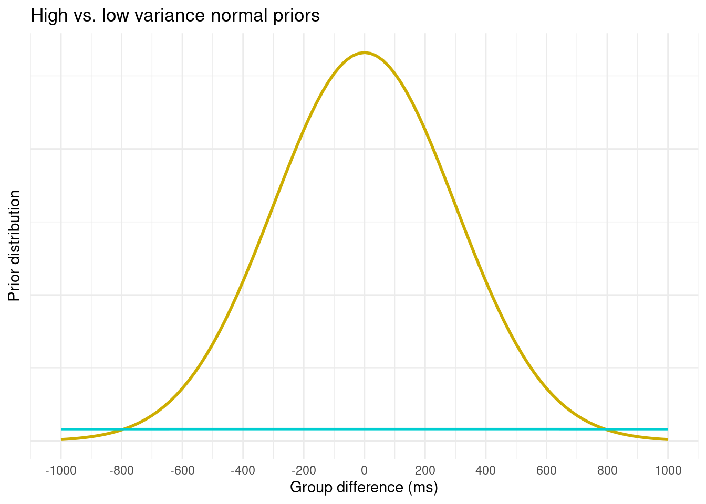
However, as cognitive psychologists we know that differences in reaction times due to low-level mechanisms are in the order of tens of milliseconds. At the same time, we do not want the prior to assume any effect size or direction: